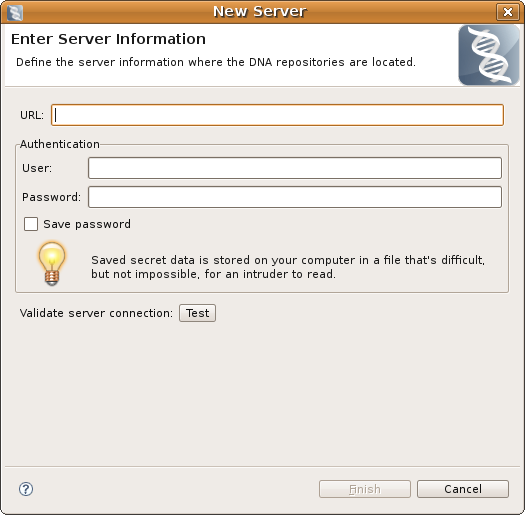

The DNA Server Dialog is used to create and register new servers that host DNA repositories. This dialog is also used to edit an existing server's properties.
Here is what the DNA Server Dialog looks like:
The dialog consists of the following controls:
| URL Field | enter the server URL where one or more DNA repositories are hosted |
| User Field | enter the name of the user that will be used when logging in to the server |
| Password Field | enter the password to use when logging in to the server |
| Save Password Checkbox | when checked, all the server properties (including the password) will be saved to a file on the local machine |
| Test Server Connection Button | when clicked will try and connect to the server |
Once all server properties have been entered the 'Finish' button will be enabled and the new server can be created or the existing server's properties can be modified. You can display the Server Dialog from the Server View and from the Publish/Unpublish Dialog.